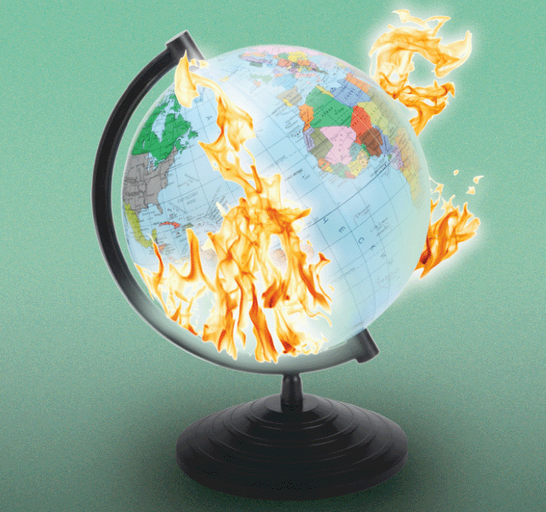

About EcoHub
EcoHub is offers lessons, activities, and videos that educators can use to empower learners' thinking about environmental sustainability. Through our educational resources, our mission is to provide free, world‑class environmental education for anyone, anywhere.
Philosophy
Current discourse on the environment, namely environmental destruction, focuses on the physical impacts without understanding the huge emotional toll that many young people feel.
In the face of our growing climate crisis, especially, young people report increasing anxiety and despair. This is known as "climate axniety," and as this term becomes more common, the climate movement is starting to take emotions seriously through education.
EcoHub is an intervention into this problem space, providing educators with resources they can implement in their lessons to teach young people more about climate change.
Every lesson or activity on EcoHub is an Open Educational Resource (OER), licensed under CC-BY, so that educators can easily edit and adapt content to their liking. Learn more about OER here.

"Earth on Fire" from Pixabay, 2019.
You're joining a global classroom!
By creating an EcoHub account and connecting with our resources, you are joining a group of educators on a similar mission to prevent the emotional toll of the climate crisis. By not having a speicfic geographic focus, these lessons are relevant to English-speaking high school and college students across the world!
References:
[1] Atkinson, J. (2020). Mourning Climate Loss. CSPA Quarterly, 32(1): 8-19.
[2] Atkinson, J., and Ray, S.J. (2023). A Field Guide to Climate Anxiety: How to Keep Your Cool in
a Warming Planet. Cal Poly Libraries, Open Educational Resources.